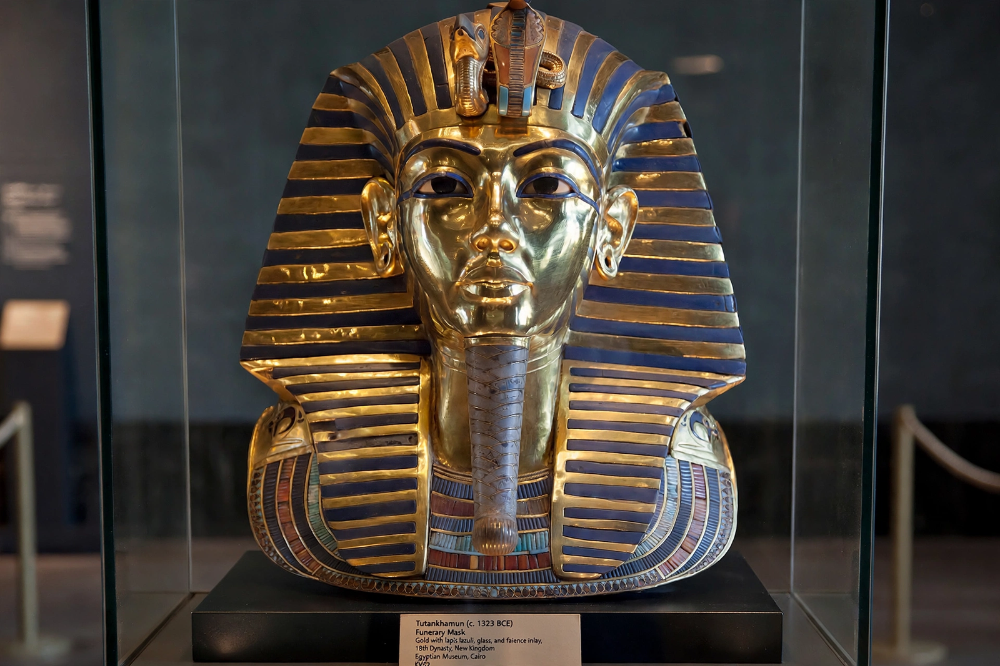

Eighteenth Dynasty of Egypt

| Period | New Kingdom |
|---|---|
| Dates | c. 1550 – 1292 BC |
| Capital | Thebes; Amarna (under Akhenaten) |
| Founder | Ahmose I |
| Notable pharaohs | Hatshepsut, Thutmose III, Amenhotep III, Akhenaten, Tutankhamun |
| Preceded by | Seventeenth Dynasty / Hyksos (Second Intermediate Period) |
| Succeeded by | Nineteenth Dynasty |
The Eighteenth Dynasty of ancient Egypt (c. 1550–1292 BC) is the first and most celebrated dynasty of the New Kingdom, the era in which Egypt reached the peak of its power as an empire. It was founded by Ahmose I, who expelled the Hyksos rulers from the Nile Delta and reunified the country.
History
Under Thutmose III, often called the "Napoleon of Egypt," Egyptian armies campaigned as far as the Euphrates and Nubia, creating an empire administering territory through vassal rulers. His stepmother and co-ruler Hatshepsut, one of the few female pharaohs, sponsored a famous trading expedition to Punt and built her mortuary temple at Deir el-Bahari. Amenhotep III presided over a long, prosperous reign marked by diplomacy documented in the Amarna letters.
His son Akhenaten (Amenhotep IV) launched a religious revolution, promoting the sun disk Aten above all gods, closing temples and building a new capital at Amarna — a period followed by a restoration under Tutankhamun, who ascended the throne as a child and died young; his nearly intact tomb, discovered by Howard Carter in 1922, made him the dynasty's most famous king in the modern world. The dynasty ended with the childless Horemheb, who passed power to Ramesses I of the Nineteenth Dynasty.
Legacy
The dynasty produced Egypt's grandest temples, including expansions at Karnak and Luxor, and the royal tombs of the Valley of the Kings. Its art, wealth and imperial reach define the popular image of pharaonic Egypt.